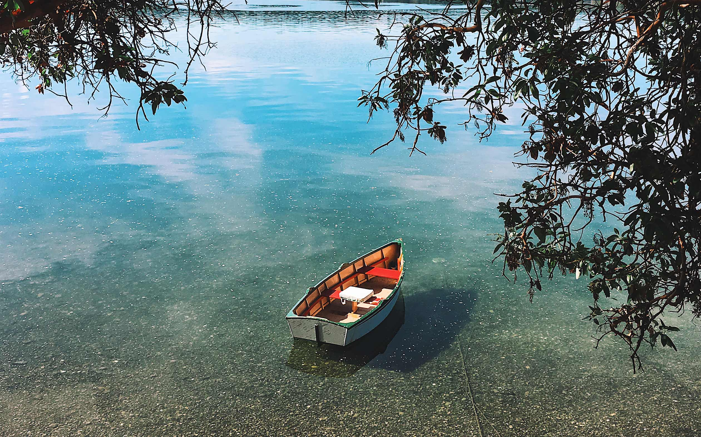
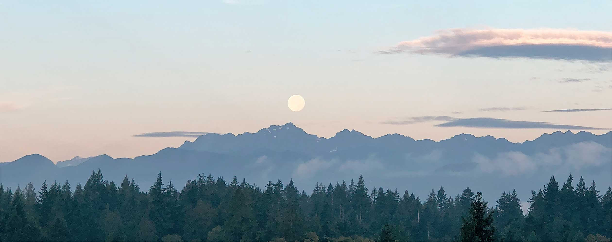
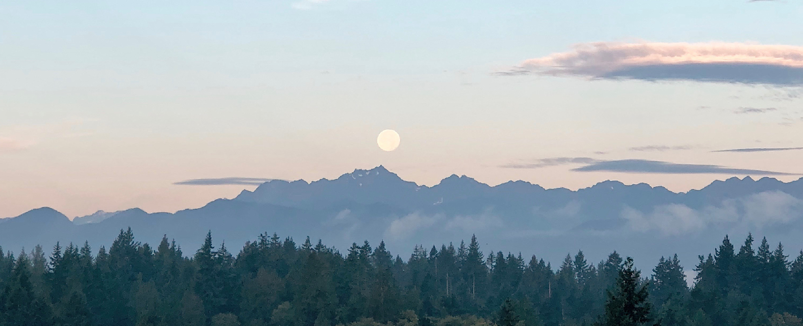

<!DOCTYPE html>
<html lang="en">

<head>
    <!-- Global site tag (gtag.js) - Google Analytics -->
    <script async src="https://www.googletagmanager.com/gtag/js?id=UA-3908885-6"></script>
    <script>
        window.dataLayer = window.dataLayer || [];

        function gtag() {
            dataLayer.push(arguments);
        }
        gtag('js', new Date());

        gtag('config', 'UA-3908885-6');
    </script>
    <meta charset="UTF-8">
    <meta name="viewport" content="width=device-width, initial-scale=1.0">
    <meta http-equiv="X-UA-Compatible" content="ie=edge">
    <title>Visit Poulsbo Today!</title>
    <link href="https://fonts.googleapis.com/css?family=Cherry+Swash|Playfair+Display|Raleway:400,700" rel="stylesheet">
    <link rel="stylesheet" href="style.css">
</head>

<body>

    <section>
        <div class="container">
            <picture>
                <source media="(max-width: 480px)" srcset="images/dinghy480-1x.jpg 1x,
            images/dinghy480-2x.jpg 2x, images/dinghy480-3x.jpg 3x">
                <source media="(max-width: 800px)" srcset="images/dinghy800-1x.jpg 1x,
            images/dinghy800-2x.jpg 2x, images/dinghy800-3x.jpg 3x">
                <source media="(max-width: 1024px)" srcset="images/dinghy1024-1x.jpg 1x,
            images/dinghy1024-2x.jpg 2x, images/dinghy1024-3x.jpg 3x">
                <source media="(max-width: 1260px)" srcset="images/dinghy1260-1x.jpg 1x,
            images/dinghy1260-2x.jpg 2x, images/dinghy1260-3x.jpg 3x">
                <source media="(max-width: 1366px)" srcset="images/dinghy1366-1x.jpg 1x,
            images/dinghy1366-2x.jpg 2x, images/dinghy1366-3x.jpg 3x">
                <source media="(max-width: 1600px)" srcset="images/dinghy1600-1x.jpg 1x,
            images/dinghy1600-2x.jpg 2x">
                <source media="(max-width: 1920px)" srcset="images/dinghy1920-1x.jpg 1x,
            images/dinghy1920-2x.jpg 2x">
                <source media="(max-width: 2560px)" srcset="images/dinghy2560-1x.jpg 1x,
            images/dinghy2560-2x.jpg 2x">
                
            </picture>
            <h1 class="centered">"Velkommen til Poulsbo"</h1>
        </div>
    </section>

    <section>
        <div class="subhead">
            <h1>Climb aboard our dinghy and embark on a journey of <span class="emphasis1">adventure</span> and <span
                    class="emphasis1">discovery</span>. Let's explore Poulsbo, your gateway to the <span
                    class="emphasis1">beautiful</span> Pacific Northwest.</h1>
        </div>
        <div class="info">
            <div>
                <p><span>The Charm of Poulsbo</span><br>Founded by Vikings marauding in long boats, Poulsbo has held
                    close to its Norse seafaring roots. The charming downtown, nestled on the waters of the Puget Sound,
                    features charming Norwegian storybook
                    architecture with only a hint of kitsch. Diversions abound. Explore super adorbs bookstores,
                    bakeries, and coffee shops. Then jump right into the frigid waters of Liberty Bay for a bracing open
                    water swim! Or rent one of the abundant
                    kayaks.</p>
            </div>
            <div>
                <p class="padbottom"><span>An Outdoor Wonderland</span><br>Thwart existential crisis while strolling
                    along the beach at Point No Point. Walk around the historic lighthouse which has been heralded as
                    “North Kitsap County’s 8th best maritime navigational feature”
                    for three of the last ten years. Ponder discouraging beach naming conventions at Foulweather Bluff.
                    There you will encounter forest trails, sandy beach, marine wetlands, and tide pools, all while
                    hardly breaking a sweat.</p>
            </div>
        </div>
    </section>

    <section>
        <div class="container">
            <picture>
                <source media="(max-width: 480px)" srcset="images/olympics480-1x.jpg 1x,
                images/olympics480-2x.jpg 2x, images/olympics480-3x.jpg 3x">
                <source media="(max-width: 800px)" srcset="images/olympics800-1x.jpg 1x,
                images/olympics800-2x.jpg 2x, images/olympics800-3x.jpg 3x">
                <source media="(max-width: 1024px)" srcset="images/olympics1024-1x.jpg 1x,
                images/olympics1024-2x.jpg 2x, images/olympics1024-3x.jpg 3x">
                <source media="(max-width: 1260px)" srcset="images/olympics1260-1x.jpg 1x,
                images/olympics1260-2x.jpg 2x, images/olympics1260-3x.jpg 3x">
                <source media="(max-width: 1366px)" srcset="images/olympics1366-1x.jpg 1x,
                images/olympics1366-2x.jpg 2x, images/olympics1366-3x.jpg 3x">
                <source media="(max-width: 1600px)" srcset="images/olympics1600-1x.jpg 1x,
                images/olympics1600-2x.jpg 2x">
                <source media="(max-width: 1920px)" srcset="images/olympics1920-1x.jpg 1x,
                images/olympics1920-2x.jpg 2x">
                <source media="(max-width: 2560px)" srcset="images/olympics2560-1x.jpg 1x,
                images/olympics2560-2x.jpg 2x">
                
            </picture>
            <!--  -->
        </div>
        <div class="subhead">
            <h1>From here the PNW is your oyster. After taking in the <span class="emphasis2">stunning local
                    scenery</span> be sure to visit our neighbors in Seattle and Victoria B.C.</h1>
        </div>
        <div class="info">
            <div>
                <p><span>Seattle</span><br>Just a short ferry ride away is the jewel of the PNW, yes Seattle. Once there
                    your ticket to see the sights is aboard our finest acheivement: the monorail. As you are gliding
                    along on one rail you’ll feel as if
                    you aren’t only traveling through space, but also into the distant future! See the sights the way
                    our decendents will, from a train car balanced on not two but one rail. Don’t miss Pike Place
                    Market, The EMP, or any of the manifold
                    museum and entertainment options.</p>
            </div>
            <div>
                <p class="padbottom"><span>Victoria</span><br>Don’t forget your passport, because you are about to
                    become a citizen of the world! You will brave the Strait of Juan de Fuca aboard a stout ferry boat
                    and arrive in the land of dreams: Victoria. There is apparently
                    a huge rope footbridge to walk across like you’re Indiana Jones. I’ve also heard great things about
                    Miniature World, where they have really small versions of things that are usually normal size.</p>
            </div>
        </div>
    </section>

    <footer>
        <div>
            <h4>Site design, coding, and photography by <a href="https://www.scottwheeler.dev">Scott Wheeler</a>. ©2018
            </h4>
        </div>
    </footer>

</body>